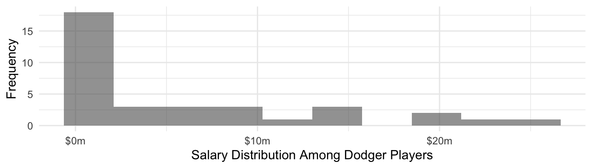
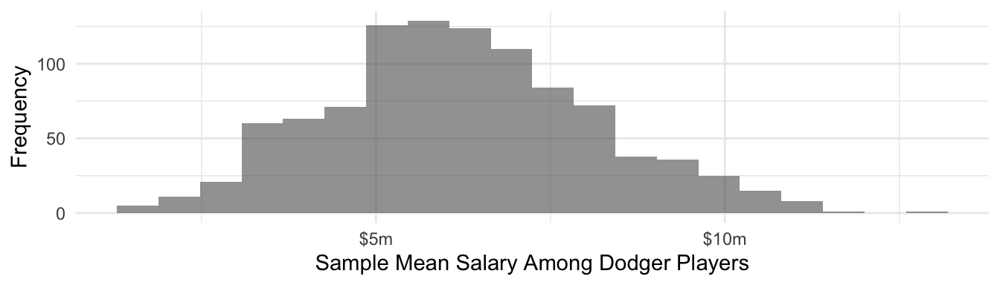

library(tidyverse)
library(scales)
library(foreach)
set.seed(90095)Confidence Intervals
Here are slides in website and pdf format. This page goes beyond the content of the slides and is more detailed and mathematical than the slides. Slides provide more support for coding. Notation and ideas on this page loosely draw on Efron & Hastie (2016) Ch 10–11.
As researchers adopt algorithmic estimation methods for which analytical standard errors do not exist, methods to produce standard errors by resampling become all the more important. We will discuss the bootstrap for simple random samples and extensions to allow resampling-based standard error estimates in complex survey samples.
A motivating problem
Out of the population of baseball salaries on Opening Day 2023, imagine that we have a sample of 10 Dodger players.
We calculate the mean salary among the sampled Dodgers to be $3.8 million. How much should we trust this estimate?
For the sake of discussion, we provide the following information.
# A tibble: 3 × 2
`Salary Among Sampled Dodgers` Value
<chr> <dbl>
1 sample_mean 3829119.
2 sample_standard_deviation 6357851.
3 sample_size 10 Classical inference
To know how confident to be in our sample-based estimate, we need to reason about why our sample-based estimate might differ from the true (but unknown) population parameter. Let \(\hat\mu\) denote our estimate for the sample mean of \(Y\).
\[\hat\mu = \frac{1}{n}\sum_{i}Y_i\]
Across repeated samples from the population, the estimate \(\hat\mu\) equals the population mean on average but differs in any particular sample due to random sampling variance. The sample variance of the mean has a known formula.
\[ V(\hat\mu) = V\left(\frac{1}{n}\sum_i Y_i\right) = \frac{1}{n^2}\sum_i V(Y_i) = \frac{V(Y)}{n} \]
The sample-to-sample variance of \(\hat\mu\) will be greater to the degree that \(Y\) varies substantially across individuals in the population (larger \(V(Y)\)), and will be smaller to the degree that many individuals are included in the sample (larger \(n\)).
You might be more familiar with this equation expressed as the standard deviation of the estimator, sometimes referred to as the standard error, which is the square root of the variance of the estimator,
\[ \text{SD}(\hat\mu) = \sqrt{\text{V}(\hat\mu)} = \frac{\text{SD}(Y)}{\sqrt{n}} \] where \(\text{SD}()\) is the standard deviation of \(Y\) across individuals in the population.
From the Central Limit Theorem, we know that even if \(Y\) is not Normally distributed the sample mean of \(Y\) converges to a Normal distribution as the sample size grows. Because we have formulas for these parameters, we can write down a formula for that sampling distribution.
\[ \hat\mu \rightarrow \text{Normal}\left(\text{Mean} = \text{E}(Y),\quad \text{SD} = \frac{\text{SD}(Y)}{\sqrt{n}}\right) \] The graph below visualizes the sampling variability of the sample mean. Across repeated samples, the sample mean \(\hat\mu\) is normally distributed about its true population value. The middle 95% of sample estimates \(\hat\mu\) fall within a region that can be derived with known formulas,
Warning in annotate(geom = "label", x = 0, y = 0.2 * dnorm(0), label = "'Middle
95% of Sample-Based Estimates'~hat(mu)", : Ignoring unknown parameters:
`label.size`
where \(\Phi^{-1}()\) is the inverse CDF of the standard Normal distribution.
You might be concerned: can a Normal distribution be a good approximation when Dodger player salaries are highly right-skewed? After all this is the distribution of Dodger player salaries.

But the sample mean among 10 sampled Dodgers is actually quite close to a normal sampling distribution. This is because of the Central Limit Theorem.

Plug-in estimators
We have a formula for the standard deviation of the sample mean, but it involves the term \(\text{SD}(Y)\) which is the unknown population standard deviation of \(Y\). It is common to plug in the sample estimate of this value in order to arrive at a sample estimate of the standard deviation of the estimator.
\[ \widehat{\text{SD}}(\hat\mu) = \frac{\widehat{\text{SD}}(Y)}{\sqrt{n}} = \sqrt{\frac{\frac{1}{n-1}\sum_i (Y_i - \bar{Y})^2}{n}} \]
The idea of a plug-in estimator may seem obvious, but soon we will see that the step at which plug-ins occur changes dramatically when we move to resampling methods for statistical inference.
Classical confidence intervals
A 95% confidence interval \((\hat\mu_\text{Lower},\hat\mu_\text{Upper})\) is an interval that has the property that across repeated samples the probability that \(\hat\mu_\text{Lower} < \mu < \hat\mu_\text{Upper}\) is 0.95. One way to think about this is that two properties should hold: the probability that the lower limit is too high and the probability that the upper limit is too low are each 0.025.
\[ \begin{aligned} \text{P}(\hat\mu_\text{Lower} > \mu) &= .025 \\ \text{P}(\hat\mu_\text{Upper} < \mu) &= .025 \end{aligned} \]
You may know from statistics that a 95% confidence interval for the sample mean can be derived as follows.
\[ \hat\mu \pm \Phi^{-1}(.975)\widehat{\text{SD}}(\hat\mu) \] where \(\Phi^{-1}(.975)\) is the value 1.96 that you might look up in the back of a statistics textbook. We can show that these confidence limits have the desired properties. For example, taking the lower limit:
\[ \begin{aligned} &\text{P}\left(\hat\mu_\text{Lower} > \mu\right)\\ &=\text{P}\left(\hat\mu - \Phi^{-1}(.975)\widehat{\text{SD}}(\hat\mu) > \mu\right)\\ &= \text{P}\left(\hat\mu - \mu > \Phi^{-1}(.975)\widehat{\text{SD}}(\hat\mu)\right)\\ &= \text{P}\left(\frac{\hat\mu - \mu}{\widehat{\text{SD}}(\hat\mu)} > \Phi^{-1}(.975)\right)\\ &= .025 \end{aligned} \]
where the last line holds because \(\frac{\hat\mu - \mu}{\text{SD}(\hat\mu)}\) follows a standard Normal distribution. The proof for the upper limit is similar.
Across repeated samples, a 95% confidence interval constructed in this way should contain the true mean 95% of the time. We can visualize this behavior by taking repeated samples of 10 Dodger players from our data.

In this particular simulation, we have slight undercoverage and the upper confidence limit is often the one that is incorrect. These problems may arise because our asymptotic normality of mean salaries is an imperfect approximation at a sample size of \(n = 10\).
Analytic vs computational inference procedures
Analytical confidence intervals (derived by math) are the default for many researchers. Yet the exercise above reveals some of their shortcomings. First, there is a lot of math! Second, despite the math we still relied on the plug-in principle: for unknown quantities such as \(\text{SD}(Y)\) we plug in sample-based estimates \(\widehat{\text{SD}}(Y)\) and act as though these were known. Third, our results may still yield imperfect coverage because underlying assumptions may be only approximately met. For example, our confidence intervals may have undercovered because the asymptotics of the Central Limit Theorem are unreliable at \(n = 10\).
Now suppose you had a complicated data science approach, such as a predicted value \(\hat{Y}_{\vec{x}}=\hat{\text{E}}(Y\mid \vec{X} = \vec{x})\) from a LASSO regression. How would you place a confidence interval on that predicted value?
Computational inference procedures take a different approach. These procedures focus on a generic estimator \(s()\) applied to data. Instead of deriving properties of the estimator by math, computational approaches seek to simulate what would happen when \(s()\) is applied to samples from the population, often by using a plug-in principle at an earlier step.
The estimator function \(s()\)
At the core of a resampling-based inference procedure is a broad sense of how our estimate comes to be. First, the world has some cumulative distribution function \(F\) over data that could be generated. A particular sample \(\texttt{data}\) is drawn from the probability distribution of the world. The researcher then applies an estimator function \(s()\) that takes in and returns an estimate \(s(\texttt{data})\).
\[F\rightarrow \texttt{data} \rightarrow s(\texttt{data})\]
In our baseball example, the estimator function is the sample mean of the salary variable.
estimator <- function(data) {
data |>
summarize(estimate = mean(salary)) |>
pull(estimate)
}We would like to repeatedly simulate \(\texttt{data}\) from the world and see the performance of the estimator. But this is only possible in illustrations like the baseball example where the population data are known. When \(F\) is unknown and we only see one \(\texttt{data}\), we need a new procedure.
The nonparametric bootstrap
The nonparametric bootstrap simulates repeated-sample behavior by a plug-in principle.
- Plug in the empirical distribution \(\hat{F}\) of our sample data as an estimate of the true distribution \(F\) for the unobserved full population of data
- Generate a bootstrap sample \(\texttt{data}^*\) by sampling from our empirical data with replacement.
- Generate an estimate \(s(\texttt{data}^*)\) using the bootstrap data.
- Repeat steps (2) and (3) many times to generate a large number \(B\) of bootstrap replicate estimates.
Visually, this procedure is analogous to the above.
\[\hat{F}\rightarrow \texttt{data}^* \rightarrow s(\texttt{data}^*)\]
Nonparametric bootstrap standard errors
In classical statistics, the standard error of an estimator is typically a mathematical expression derived for that particular estimator and then estimated by the plug-in principle. For example, the standard error of the mean is \(\text{SD}(\hat\mu) = \text{SD}(Y) / \sqrt{n}\).
With the bootstrap, we avoid this altogether because we have \(B\) bootstrap replicate estimates. We can estimate the standard deviation of the estimator over repeated samples by the empirical standard deviation across bootstrap replicates.
\[ \widehat{\text{SD}}(s) = \frac{1}{B-1}\sum_{r=1}^B \bigg(s(\texttt{data}^*_r) - s(\texttt{data}^*_\bullet)\bigg)^2 \] where \(s(\texttt{data}^*_\bullet)\) is the mean of the estimate across the bootstrap samples. Note that just like the analytic standard errors, these have also relied on a plug-in principle: we plugged in the empirical distribution \(\hat{F}\) for the population distribution \(F\) when generating bootstrap samples from our empirical data instead of actual samples from the population.
In our baseball example, we first load data and draw a sample of 10 Dodger players.
population <- read_csv("http://soc114.github.io/data/baseball_population.csv")
sample <- population |>
filter(team == "L.A. Dodgers") |>
sample_n(size = 10) |>
select(player, team, salary)# A tibble: 10 × 3
player team salary
<chr> <chr> <dbl>
1 Barnes, Austin L.A. Dodgers 3500000
2 Reyes, Alex* L.A. Dodgers 1100000
3 Betts, Mookie L.A. Dodgers 21158692
4 Vargas, Miguel L.A. Dodgers 722500
5 May, Dustin L.A. Dodgers 1675000
6 Bickford, Phil L.A. Dodgers 740000
7 Jackson, Andre L.A. Dodgers 722500
8 Thompson, Trayce L.A. Dodgers 1450000
9 Pepiot, Ryan* L.A. Dodgers 722500
10 Peralta, David L.A. Dodgers 6500000The code below generates a bootstrap sample from these 10 players by sampling 10 players with replacement. You will see that some players in the original sample do not appear, and others appear more than once.
one_sample <- sample |>
slice_sample(prop = 1, replace = TRUE) |>
print()# A tibble: 10 × 3
player team salary
<chr> <chr> <dbl>
1 Betts, Mookie L.A. Dodgers 21158692
2 Peralta, David L.A. Dodgers 6500000
3 Barnes, Austin L.A. Dodgers 3500000
4 Pepiot, Ryan* L.A. Dodgers 722500
5 Jackson, Andre L.A. Dodgers 722500
6 May, Dustin L.A. Dodgers 1675000
7 Reyes, Alex* L.A. Dodgers 1100000
8 May, Dustin L.A. Dodgers 1675000
9 Vargas, Miguel L.A. Dodgers 722500
10 Peralta, David L.A. Dodgers 6500000We can apply our estimator function to this sample to get one bootstrap estimate.
estimator <- function(data) {
data |>
summarize(estimate = mean(salary)) |>
pull(estimate)
}
estimator(one_sample)[1] 4427619The code below carries out 500 bootstrap samples and estimates the sample mean in each one.
bootstrap_estimates <- foreach(r = 1:1000, .combine = "c") %do% {
sample |>
# Draw a bootstrap sample
slice_sample(prop = 1, replace = TRUE) |>
# Apply the estimator
estimator()
}The figure below shows how that the bootstrap distribution of the estimator compares to the actual sampling distribution of the estimator (known in this case since the population is known).

The bootstrap distribution is more heaped on 10 distinct salary values: the particular 10 Dodger player salaries included in our sample. When the variable being summarized takes continuous values, it will generally be more discretized in the bootstrap setting because there are only the sample size \(n\) distinct values instead of the population size \(N\) of distinct values. Otherwise, the two distributions are similar.
The bootstrap estimate of the standard error in this case is
bootstrap_estimates |> sd()[1] 1965073which is 86% of the size of the theoretical standard error of 2.2969632^{6}. Like all sample-based analogs to theoretical standard errors, the bootstrap estimate of the standard error can itself be sensitive to sampling variability.
Parallel processing
The bootstrap is a computer-age approach to inference: present-day computers are what make it possible to apply the estimator thousands of repeated times.
Parallel processing can make the bootstrap faster. Note that each bootstrap replicate is independent: the first bootstrap replicate results are not needed to carry out the second, and so on. If you had 5 or 10 computers, you could split the bootstrap samples across those computers and carry it out 5 or 10 times as fast!
You may be surprised that you likely do have several effectively independent computers (called cores) within your computer. The doParallel package makes it possible to use these cores.
library(doParallel)With the doParallel package loaded, you can see how many cores you have with the detectCores() function.
detectCores()[1] 12In my case, there are 12 cores on my computer. This means I can split my bootstrap over 8 parallel processors! First, initialize a cluster with these cores.
cl <- makeCluster(spec = detectCores())Then tell your computer to use that computing cluster for parallel processing.
registerDoParallel(cl)Finally, you can carry out your foreach loop using parallel processing, with the %dopar% operator clarifying that the loop should be done with parallel processing. You will also need the .packages argument to pass to the computing cores any packages that are used within the procedure.
bootstrap_estimates <- foreach(
r = 1:1000,
.combine = "c",
.packages = c("tidyverse")
) %dopar% {
sample |>
# Draw a bootstrap sample
slice_sample(prop = 1, replace = TRUE) |>
# Apply the estimator
estimator()
}In my case, parallel processing will make the entire procedure about 12 times faster. As computers have become faster with more cores, bootstrapping has become an increasingly feasible method of statistical inference.
Bootstrap confidence intervals
The discussion above has focused on using the bootstrap to estimate standard errors. There are many methods to construct confidence intervals using bootstrap procedures. Two of the most common are the Normal approximation method and the percentile method.
Normal approximation
The beginning of this page reviewed classical statistics in which we routinely rely on the Central Limit Theorem which ensures that sample mean estimators are asymptotically Normal. Likewise with the bootstrap, if we believe that \(s(\texttt{data})\) has a Normal sampling distribution, then we can construct a confidence interval by the Normal approximation with the bootstrap estimate of the standard error.
\[ s(\texttt{data}) \pm \Phi^{-1}(.975)\text{SD}\big(s(\text{data}^*)\big) \]
estimator(sample) + c(-1,1) * qnorm(.975) * sd(bootstrap_estimates)[1] 131954.5 7526283.9Percentile method
The bootstrap also offers another way to calculate the confidence interval: the middle 95% of the bootstrap estimates.
quantile(bootstrap_estimates, probs = c(.025, .975)) 2.5% 97.5%
1132531 7892739 The percentile method can work better than the Normal approximation method in cases where normality does not hold. For example, in the beginning of this page we used analytic intervals that seemed imperfect in part because the Central Limit Theorem had not adequately yielded normality at a sample size of 10.

Bootstrap for machine learning algorithms
Suppose a researcher carries out the following procedure.
- Sample \(n\) units from the population
- Learn an algorithm \(\hat{f}:\vec{X}\rightarrow Y\) to minimize squared error
- Report a prediction \(\hat{\text{E}}(Y\mid\vec{X} = \vec{x}) = \hat{f}(\vec{x})\)
How would the researcher use the bootstrap to carry out this process?
- Draw a bootstrap sample \(\texttt{data}^*\) of size \(n\)
- Learn the algorithm \(\hat{f}^*\) in the bootstrap sample
- Store the bootstrap estimate \(\hat{f}^*(\vec{x})\)
Then the researcher could create a confidence interval with either the Normal approximation or the percentile method. Note that the bootstrap confidence interval may have undercoverage if the estimator is biased; see the words of warning at the end of this page.
Discussion: What belongs in \(s()\)?
In each example, describe the steps the researcher might use to bootstrap this estimate while capturing all sources of uncertainty.
- A researcher first truncates the values of a skewed predictor variable \(x\) at the 1st and 99th percentile. Then the researcher learns a regression model and reports \(\hat\beta\).
- A researcher first uses cross-validation to select the tuning parameter \(\lambda\) for ridge regression. Then, they estimate ridge regression with the chosen \(\lambda\) value and make a prediction \(\hat{f}(\vec{x})\) at some predictor value \(\vec{x}\) of interest.
- A researcher first learns a prediction function \(\hat{f}:\vec{X}\rightarrow Y\) and then sees which subgroup \(\vec{x}\) has the highest predicted value \(\hat{f}(\vec{x})\), which the researcher reports.
Answers
Many steps of the analysis involve uncertainty. It can be ideal to include them all in your bootstrap! Write your estimator function to take in your raw data and return an estimate. The estimator function would include steps like truncating predictors at sample quantiles, choosing tuning parameters, and choosing subgroups of interest on which to focus.
Beyond simple random samples
The bootstrap in its simplest form is designed for simple random samples. Straightforward generalizations make it possible to move beyond simple random samples to more complex sampling designs.
Stratified bootstrap
Suppose we draw a sample of players stratified by team: 10 players per team. No matter which random sample is drawn, there will always be 10 Dodgers, 10 Angels, 10 Yankees, and so on. Stratified sampling is often a more efficient estimator than simple random sampling, and our estimator should reflect that!
As an example, suppose we have a stratified sample of 10 players per team.
stratified_sample <- population |>
group_by(team) |>
slice_sample(n = 10) |>
ungroup()We would generate a stratified bootstrap sample1 by stratifying by team, exactly as the data were generated.
stratified_bootstrap_sample <- stratified_sample |>
group_by(team) |>
slice_sample(prop = 1, replace = T)Stratified bootstrapping can be important. Using our baseball example, suppose our estimator is the predicted mean salary of the Dodgers from a linear regression.
estimator <- function(data) {
ols <- lm(salary ~ team_past_salary, data = data)
to_predict <- population |>
filter(team == "L.A. Dodgers") |>
distinct(team_past_salary)
predicted <- predict(ols, newdata = to_predict)
return(predicted)
}We get different estimates if we carry out simple vs stratified bootstrap sampling.

Cluster bootstrap
Suppose we draw a sample of players clustered by team: all players on 10 sampled teams. Clustered sampling is often less expensive than simple random sampling because it can be easier for the person carrying out the survey. This often comes at a cost of statistical efficiency.
As an example, suppose we have a clustered sample of 10 teams.
clustered_sample <- population |>
distinct(team) |>
slice_sample(n = 10) |>
left_join(population, by = join_by(team))We would generate a clustered bootstrap sample by resampling teams instead of players, exactly as the data were sampled.
chosen_teams <- clustered_sample |>
distinct(team) |>
slice_sample(prop = 1, replace = T)
clustered_bootstrap_sample <- foreach(i = 1:nrow(chosen_teams), .combine = "rbind") %do% {
chosen_teams[i,] |>
left_join(clustered_sample, by = join_by(team))
}As before, we get different estimated standard errors if we carry out clustered bootstrap sampling vs standard bootstrap sampling.

Complex survey samples
Many surveys involve complex samples, such as samples stratified by state and then clustered in regions within states. Often the variables that define sampling strata or clusters are geographic, and therefore they are often redacted from the data made available to researchers due to privacy concerns.
Thankfully, many surveys make replicate weights available to researchers. The goal of replicate weights is to enable you to resample the data in a way that mimics the (hidden) ways in which the sample was originally drawn. The rest of this section walks through the use of replicate weights, first in a hypothetical example and then in real data.
When we download data, we typically download a column of weights. For simplicity, suppose we are given a sample of four people. The weight column tells us how many people in the population each person represents. The employed column tells us whether each person employed.
name weight employed
1 Luis 4 1
2 William 1 0
3 Susan 1 0
4 Ayesha 4 1If we take an unweighted mean, we would conclude that only 50% of the population is employed. But with a weighted mean, we would conclude that 80% of the population is employed! This might be the case if the sample was designed to oversample people at a high risk of unemployment.
| Estimator | Math | Example | Result |
|---|---|---|---|
| Unweighted mean | \(=\frac{\sum_{i=1}^n Y_i}{n}\) | \(=\frac{1 + 0 + 0 + 1}{4}\) | = 50% employed |
| Weighted mean | \(=\frac{\sum_{i=1}^n w_iY_i}{\sum_{i=1}^n w_i}\) | \(=\frac{4*1 + 1*0 + 1*0 + 4*1}{4 + 1 + 1 + 4}\) | = 80% employed |
In R, the weighted.mean(x, w) function will calculate weighted means where x is an argument for the outcome variable and w is an argument for the weight variable.
When you face a complex survey sample, those who administer the survey might provide
- a vector of \(n\) weights for making a point estimate
- a matrix of \(n\times k\) replicate weights for making standard errors
By providing \(k\) different ways to up- and down-weight various observations, the replicate weights enable you to generate \(k\) estimates that vary in a way that mimics how the estimator might vary if applied to different samples from the population. For instance, our employment sample might come with 3 replicate weights.
name weight employed repwt1 repwt2 repwt3
1 Luis 4 1 3 5 3
2 William 1 0 1 2 2
3 Susan 1 0 3 1 1
4 Ayesha 4 1 5 3 4The procedure to use replicate weights depends on how they are constructed. Often, it is relatively straightforward:
- use
weightto create a point estimate \(\hat\tau\) - use
repwt*to generate \(k\) replicate estimates \(\hat\tau^*_1,\dots,\hat\tau^*_k\) - calculate the standard error of \(\hat\tau\) using the replicate estimates \(\hat\tau^*\). The formula will depend on how the replicate weights were constructed, but it will likely involve the standard deviation of the \(\hat\tau^*\) multiplied by some factor
- construct a confidence interval2 by a normal approximation \[(\text{point estimate}) \pm 1.96 * (\text{standard error estimate})\]
In our concrete example, the point estimate is 80% employed. The replicate estimates are 0.67, 0.73, 0.70. Variation across the replicate estimates tells us something about how the estimate would vary across hypothetical repeated samples from the population.
Computational strategy for replicate weights
Using replicate weights can be computationally tricky! It becomes much easier if you write an estimator() function. Your function accepts two arguments
datais thetibblecontaining the dataweight_nameis the name of a column containing the weight to be used (e.g., “repwt1”)
Example. If our estimator is the weighted mean of employment,
estimator <- function(data, weight_name) {
data |>
summarize(
estimate = weighted.mean(
x = employed,
# extract the weight column
w = sim_rep |> pull(weight_name)
)
) |>
# extract the scalar estimate
pull(estimate)
}In the code above, sim_rep |> pull(weight_name) takes the data frame sim_rep and extracts the weight variable that is named weight_name. There are other ways to do this also.
We can now apply our estimator to get a point estimate with the main sampling weight,
estimate <- estimator(data = sim_rep, weight_name = "weight")which yields the point estimate 0.80. We can use the same function to produce the replicate estimates,
replicate_estimates <- c(
estimator(data = sim_rep, weight_name = "repwt1"),
estimator(data = sim_rep, weight_name = "repwt2"),
estimator(data = sim_rep, weight_name = "repwt3")
)yielding the three estimates: 0.67, 0.73, 0.70. In real data, you will want to apply this in a loop because there may be dozens of replicate weights.
The standard error of the estimator will be some function of the replicate estimates, likely involving the standard deviation of the replicate estimates. Check with the data distributor for a formula for your case. Once you estimate the standard error, a 95% confidence interval can be constructed with a Normal approximation, as discussed above.
Application in the CPS
Starting in 2005, the CPS-ASEC samples include 160 replicate weights. If you download replicate weights for many years, the file size will be enormous. We illustrate the use of replicate weights with a question that can be explored with only one year of data: among 25-year olds in 2023, how did the proportion holding four-year college degrees differ across those identifying as male and female?
We first load some packages, including the foreach package which will be helpful when looping through replicate weights.
library(tidyverse)
library(haven)
library(foreach)To answer our research question, we download 2023 CPS-ASEC data including the variables sex, educ, age, the weight variable asecwt, and the replicate weights repwtp*.
cps_data <- read_dta("../data_raw/cps_00079.dta")We then define an estimator to use with these data. It accepts a tibble data and a character weight_name identifying the name of the weight variable, and it returns a tibble with two columns: sex and estimate for the estimated proportion with a four-year degree.
estimator <- function(data, weight_name) {
data |>
# Define focal_weight to hold the selected weight
mutate(focal_weight = data |> pull(weight_name)) |>
# Restrict to those age 25+
filter(age >= 25) |>
# Restrict to valid reports of education
filter(educ > 1 & educ < 999) |>
# Define a binary outcome: a four-year degree
mutate(college = educ >= 110) |>
# Estimate weighted means by sex
group_by(sex) |>
summarize(estimate = weighted.mean(
x = college,
w = focal_weight
))
}We produce a point estimate by applying that estimator with the asecwt.
estimate <- estimator(data = cps_data, weight_name = "asecwt")# A tibble: 2 × 2
sex estimate
<dbl+lbl> <dbl>
1 1 [male] 0.369
2 2 [female] 0.397Using the foreach package, we apply the estimator 160 times—once with each replicate weight—and use the argument .combine = "rbind" to stitch results together by rows.
library(foreach)
replicate_estimates <- foreach(r = 1:160, .combine = "rbind") %do% {
estimator(data = cps_data, weight_name = paste0("repwtp",r))
}# A tibble: 320 × 2
sex estimate
<dbl+lbl> <dbl>
1 1 [male] 0.368
2 2 [female] 0.396
3 1 [male] 0.371
4 2 [female] 0.400
5 1 [male] 0.371
6 2 [female] 0.397
7 1 [male] 0.369
8 2 [female] 0.397
9 1 [male] 0.370
10 2 [female] 0.398
# ℹ 310 more rowsWe estimate the standard error of our estimator by a formula \[\text{StandardError}(\hat\tau) = \sqrt{\frac{4}{160}\sum_{r=1}^{160}\left(\hat\tau^*_r - \hat\tau\right)^2}\] where the formula comes from the survey documentation. We carry out this procedure within groups defined by sex, since we are producing estimate for each sex.
standard_error <- replicate_estimates |>
# Denote replicate estimates as estimate_star
rename(estimate_star = estimate) |>
# Merge in the point estimate
left_join(estimate,
by = join_by(sex)) |>
# Carry out within groups defined by sex
group_by(sex) |>
# Apply the formula from survey documentation
summarize(standard_error = sqrt(4 / 160 * sum((estimate_star - estimate) ^ 2)))# A tibble: 2 × 2
sex standard_error
<dbl+lbl> <dbl>
1 1 [male] 0.00280
2 2 [female] 0.00291Finally, we combine everything and construct a 95% confidence interval by a Normal approximation.
result <- estimate |>
left_join(standard_error, by = "sex") |>
mutate(ci_min = estimate - 1.96 * standard_error,
ci_max = estimate + 1.96 * standard_error)# A tibble: 2 × 5
sex estimate standard_error ci_min ci_max
<dbl+lbl> <dbl> <dbl> <dbl> <dbl>
1 1 [male] 0.369 0.00280 0.364 0.375
2 2 [female] 0.397 0.00291 0.391 0.403We use ggplot() to visualize the result.
result |>
mutate(sex = as_factor(sex)) |>
ggplot(aes(
x = sex,
y = estimate,
ymin = ci_min,
ymax = ci_max,
label = scales::percent(estimate)
)) +
geom_errorbar(width = .2) +
geom_label() +
scale_x_discrete(
name = "Sex",
labels = str_to_title
) +
scale_y_continuous(name = "Proportion with 4-Year College Degree") +
ggtitle(
"Sex Disparities in College Completion",
subtitle = "Estimates from the 2023 CPS-ASEC among those age 25+"
)
We conclude that those identifying as female are more likely to hold a college degree. Because we can see the confidence intervals generated using the replicate weights, we are reasonably confident in the statistical precision of our point estimates.
A word of warning
The bootstrap is a powerful tool, but there are notable cases in which it fails.
First, all frequentist confidence intervals that are based solely on sampling variance may suffer undercoverage if applied to biased estimators. For example, many machine learning algorithms induce bias through regularization. This means that even if we correctly approximate sampling variance, the center of our confidence intervals may be systematically misaligned from the true population parameter, yielding undercoverage.
Second, the bootstrap can exhibit unexpected performance with statistics such as the maximum or minimum value, since these statistics can be sensitive to a particular data point. Taking the maximum as an example, the value \(\text{max}(\vec{y}^*)\) in a bootstrap sample will never be higher than \(\text{max}(\vec{y})\) in the sample from which that bootstrap was drawn. The entire bootstrap distribution of \(\text{max}(\vec{y}^*)\) will be at or below the original estimate of \(\text{max}(\vec{y})\). Like the max or min, quantiles of \(\vec{y}\) can also lead to unexpected bootstrap behavior. Generally the bootstrap will have the best performance for statistics such as the mean for which no particular unit plays an especially determining role.
Note: In class we will use many_samples.csv. This note is just here so that the data will exist on this page.